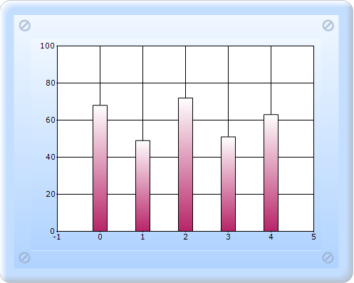

Note that the ChartDataBindModel type in the previous topic implements a simple interface called IChartSeriesModel. This interface requires the implementation of one property, two methods, and one optional event. So, you can easily provide a custom implementation of this interface instead of using the ChartDataBindModel.
To bind the Indexed model to the series:
1. Create the Indexed model, which implements IChartSeriesIndexedModel.
The sample code shown below implements the IChartSeriesModel interface that should be used with the chart.
public class StringIndexedModel : IChartSeriesIndexedModel
{
private double[] y;
public StringIndexedModel(ChartSeries series, double[] y)
{
this.y = y;
}
public int Count
{
get
{
return this.y.GetLength(0);
}
}
public double[] GetY(int xIndex)
{
return new double[] { y[xIndex] };
}
public bool GetEmpty(int index)
{
return false;
}
public event System.ComponentModel.ListChangedEventHandler Changed;
}
2. In Controller, create an instance for MVCChartModel, and set its properties.
3. Create the Series instance, and set the seriestype.
4. Bind the chart by using the following code snippet.
public ActionResult SimpleChart()
{
MVCChartModel chartModel = new MVCChartModel();
// Create chart series and add data points into it.
chartModel.Indexed = true;
//Initializes new chart series.
ChartSeries series = new ChartSeries();
series.SeriesIndexedModelImpl = new StringIndexedModel(series, new double[] { 68, 49, 72, 51, 63 });
//Adds the series to the ChartSeriesCollection.
chartModel.Series.Add(series);
//Specifies the column width mode for the Column Type chart.
chartModel.ColumnWidthMode = ChartColumnWidthMode.FixedWidthMode;
chartModel.Skins = ChartModelSkins.Office2007Blue;
chartModel.ChartSeriesSkins = ChartSeriesSkins.Analog;
chartModel.BorderAppearance.SkinStyle = ChartBorderSkinStyle.Pinned;
chartModel.Size = new Size(500, 400);
ViewData.Model = chartModel;
return View();
}
5. In the View page, invoke the ChartBuilder by using the control ID as the first argument, and convert the ViewData to MVCChartModel and set it as the second argument.
View [ASPX]
<%= Html.Chart("SimpleChart",(MVCChartModel)ViewData.Model) %>
View [cshtml]
@(new HtmlString(Html.Chart("SimpleChart",(MVCChartModel)ViewData.Model).ToString()))
6. Run the code, to get the following output:

Figure 280: Custom Data Binding
Indexed data
Note that if you have indexed data, which implies that the X values are simply categories and don't carry any cardinal value, then you can instead implement the IChartSeriesIndexedModel interface and bind it to the ChartSeries.SeriesIndexedModelImpl. The main difference in this interface is that you don't have to implement the GetX method.